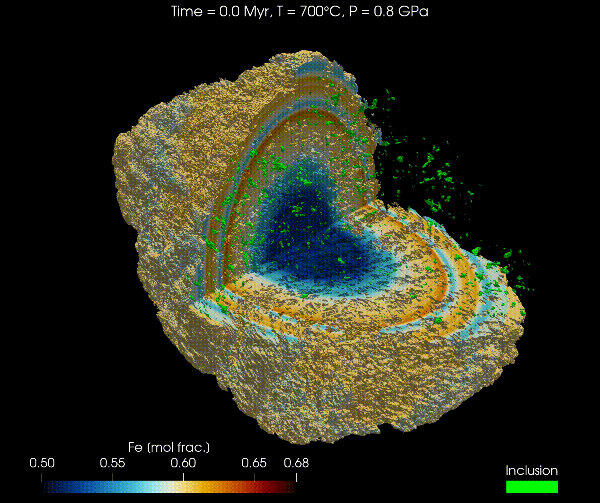

Diffusion in 3D Cartesian coordinates on CPU and GPU
This tutorial is combining the knowledge acquired from the 2D modelling and the Saving output as HDF5 files tutorials. Make sure to understand them before starting this one.
The 3D geometry of garnets can be obtained from micro-computed tomography (µCT) scans or other similar techniques. Combined with an initial composition, the full grain can be modelled with realistic geometry.
In this tutorial, we will reproduce the results from the publication "Simulating major element diffusion in garnet using realistic 3D geometries" by Dominguez et al. (in review).
To do so, we will use a callback function to save the results of the simulation to disk at regular intervals to be able to visualise the results using the software ParaView.
As mentioned in the tutorial for 2D modelling DiffusionGarnet internally uses the package ParallelStencil.jl. Make sure to start with multiple threads to get the most out of this approach if you run the model on CPU.
For this tutorial, we will first download the data from this Zenodo repository and then load it into our simulation. The data is using the 3D geometry of a real garnet grain, derived from µCT, with the initial composition of the major elements (Mg, Fe, Mn, and Ca) and the location of the boundary of the garnet domain with the matrix domain.
using Downloads
using JLD2
using DiffusionGarnet
# define the current directory as the working directory
cd(@__DIR__)
# Define the Zenodo dataset URL, you can change the name to download other datasets in the Zenodo repository (https://zenodo.org/records/15045718)
# here, we will download the lowest resolution dataset (256³) to save time, for the model isolated matrix model (IMM). Higher resolutions (512^3 and 768^3) are also available in the repository. See publication for more details.
data_file = "256_cubed_IMM_compo.jld2"
# check if the file is already downloaded
if !isfile(data_file)
# Define the Zenodo dataset URL, you can change the name to download other datasets in the Zenodo repository.
zenodo_url = "https://zenodo.org/records/15045718/files/" * data_file * "?download=1"
# Download the file in the same folder as this file (this can take a while if you connection is slow)
Downloads.download(zenodo_url, data_file)
end
# use JLD2
file = jldopen(data_file, "r")
@unpack Mg0, Fe0, Mn0, Ca0, grt_boundary = file
close(file)We will use the dimensions of the real garnet grain from the µCT scan of the publication to define the domain of the simulation.
# define total length in x and y of the real scan domain
Lx = 11422.61u"µm"
Ly = 11422.61u"µm"
Lz = 7623.57u"µm"
# define total time for the model
tfinal = 10.0u"Myr"
# define the pressure and temperature conditions
T = 700u"°C"
P = 0.8u"GPa"
# composition at the contact between garnet and matrix
Mg_border = 0.1152
Fe_border = 0.6012
Mn_border = 0.0435
Ca_border = 0.2401
# add this to fix the composition on the boundary
Mg0[grt_boundary .== 1] .= Mg_border
Fe0[grt_boundary .== 1] .= Fe_border
Mn0[grt_boundary .== 1] .= Mn_border
Ca0[grt_boundary .== 1] .= Ca_border
# convert to float32 to save memory
Mg0 = convert(Array{Float32}, Mg0)
Fe0 = convert(Array{Float32}, Fe0)
Mn0 = convert(Array{Float32}, Mn0)
Ca0 = convert(Array{Float32}, Ca0)
grt_boundary = convert(Array{Float32}, grt_boundary)
IC3D = IC3DMajor(;CMg0=Mg0, CFe0=Fe0, CMn0=Mn0, Lx, Ly, Lz, tfinal, grt_boundary)
domain3D = Domain(IC3D, T, P)
# free memory, as 3D data is large
file = nothing
data = nothing
Mg0 = nothing
Fe0 = nothing
Mn0 = nothing
Ca0 = nothing
grt_boundary = nothing
IC3D = nothingOnly the boundary between the garnet and the matrix is defined specifically in the data. Concerning the contact between garnet and inclusions, it is defined as a homogeneous boundary condition by default, meaning that no flux is exchanged between the garnet and the inclusions.
Now, let's define a callback function to save the results of the simulation in a HDF5 file, similar to the tutorial Saving output as HDF5 files:
time_save_first = collect(range(0, 1, step=0.1))u"Myr"
time_save_second = collect(range(1.5, 10, step=0.5))u"Myr"
time_save = vcat(time_save_first,time_save_second)
@unpack t_charact = domain3D # unpack characteristic time to nondimensionalise the time for the simulation
time_save_ad = ustrip.(u"Myr", time_save) ./ t_charact # convert to Myr, remove units, and convert to nondimensional time
# create the callback function
save_data_callback = PresetTimeCallback(time_save_ad, save_data_paraview, save_positions=(false,false))
path_save = "data_model_10_Ma.h5" # choose the name and the path of the HDF5 output file (make sure to add .h5 or .hdf5 at the end)We used here save_data_paraview() instead of save_data() to save the data in a format that can be read by ParaView.
We can now use the function simulate() to solve our system:
# solve the problem using DifferentialEquations.jl
sol = simulate(domain3D; callback=save_data_callback, path_save=path_save, save_everystep=false, save_start=false, progress=true, progress_steps=1, solver=ROCK2());The calculation can take some time depending on your machine, it is a low resolution model, but it is still a 3D simulation. The progress bar will give you an idea of the progress of the simulation.
Two files should have been created in the same folder as your current session at the end of the simulation: data_model_10_Ma.h5 and data_model_10_Ma.xdmf. The first one is the HDF5 file containing the results of the simulation, and the second one is an XDMF file describing the HDF5 file. This last file can be opened with visualisation software programs, such as Paraview.
For any visualisation software, make sure you open the XDMF file and not the HDF5 file. For ParaView, select the XDMF Reader as the reader when you open your data. Only Paraview has been tested with this package, but other software should work as well.
Here is a video obtained from the results of Fe for the high resolution model (768³) using ParaView:
